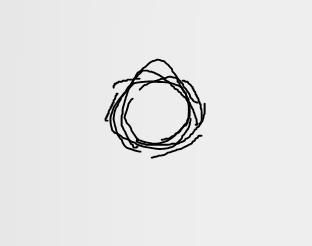

报告者：超级后后后藤
身高体重：175cm, 60kg
删减了部分不需要的内容
2023.09.27.19:20
30gTAN, 5g*20% CFI
≈15min后左手出现自发触觉，肌肉内部好似有痒觉，肝左出现痒觉。使用指甲划左手背出现白痕迹时出现发红，疑似肌肉更敏感，即Anti-dissiciation反解离
2023.10.08.10:57
TAN若达到50g/mL的浓度，将异常发腻而不甜，味精感加重而不取代其为味（甜得发腻，但甜味而不像比如白砂糖一类的
2023.10.09.07:19
在此剂量下，TAN产生镇静的催眠，这将打破我对其“清醒的镇静剂”的认知，不过不用急，分析：
原理上，TAN对：
Anti-dissos-NMDA
GABA?
大脑alpha波（这很重要）
暂认为那镇静就是镇静。在低剂量下，TAN确实是清醒的，且由于alpha波，这对思想活动维持有帮助。在高剂量下，量变引起质变，过强的镇静引起了催眠。可同样强大的wave alpha维持了睡眠中的思想活动——做梦了，我在此次明显感到梦境强化、同时有一个有趣的，我很容易收到如尿意、声音等被唤醒，这个我保持观点为wave alpha思维活动保持对机体唤醒的强力。
TAN带来的强化梦境，回想起来还是犹如蒙蔽上了一层雾；至于MOP的，那就没有雾了，非常清晰。我难以分清DXM与TAN的梦境强化，我暂时认为这是思维活动保持造成的。
Anti-dissociation的副作用在我身上付现了：我感到很累，很疲累，因此适当解离利于Anti-疲累
2023.12.04.14:0X
梦境/内部幻觉记录
先生们，我相信这是我有史以来见到的最重要的内部幻觉！我迫不及待地将其说出！
第三部分- 我突然看见一白色屏幕，其如同陈旧的纸张，上面飘有——黑色的文字，并以MP18射速（指战地1里的MP18，射速为每分钟550次） 略快的速度闪变。我此时完全未入眠，听、触觉完全未被关闭，仍能听见现境声音——有鸟在叫。我有十足的思考保留，此时我很恐慌，想将其从视觉中撤走，可对精药研究的求知又迫使我将其拉回。于是我鼓足勇气，扩大了幻觉视觉，仔细注视幻觉：在此之前，幻觉较朦胧。在我尝试扩大它们后，它们的边界向外直至白屏占全视野，边缘朦胧逐渐消失。
step1： 我未意图改变内部幻觉，我看见：（由于文字太大糊一起，无法辨别，只知道是英语希腊文一类的。）这种画面闪烁出现，我无法得知这种文字的意义，但疑似关联《圣经》（见2-）
（示意图）
step2： 我按照对于ATD的外部幻觉之经验，改变意念：
意念：做圆（画了很多次，均找不出那种似圆非圆的形状）
（示意图）
文字马上如同猫和老鼠里的过渡动画那样去组成一个圆。此圆找不出任何一地不像椭圆，也找不出离心率，但仍能被辨认出圆而非椭圆。其以线条绘成，总线条的粗细不一，形状也“飞采”（就像素描？）
step3： 我意念：绘制超天酱（检测幻觉的常客）
（示意图）
我美术不好。绘制到这一步就停止了。我尚存的绘画术就是画一个魔圆脸
step4： 我意图绘制双曲线（焦点在x上）
（意图）
（结果示意图）中间那个是上一个圆，坐标轴很淡
直到幻觉结束也未见双曲线绘制成功
之后，幻觉似乎被一种力量中断，将内幻向上移动，于是我试着睁开眼。此时看见：
圆圈扩出了一个视野
x；光线十足的区域
一名人员，眼睫毛清晰可见
这张照片如同我在DXM与ATD的内幻中所见，定格且清晰——我看那眼睫毛清晰可见！人眼千真万确！
我此时思考能力完全，认为：这一定有又是一层内幻，况且我客观实在于关灯午睡的家里，触感也表明没有人在我身前，听觉表明没有人来的动静。于是我尝试回到白屏内幻，却发现无果。一番操作下来选择打开眼睛醒来，第一眼可见天花板出淡绿圆外幻
在这个内幻中，白屏内幻似乎是存在于视野顶的，或者是从视野顶提下来的。并且全程除视觉，感知完全未减，可以说这中午我根本未睡
第一部分- 这段回忆是醒来后才发现存在的，这可能是我于半睡半醒之间的思维活动：
梦见看暗区视频，视频中的人身穿大金背景色的，改变了的HLC轻甲（我在那时前几周，曾有过好几局穿HLC轻甲玩热成像的对局）。视频着重于主播去介绍这个甲在早期版本的存在。
第二部分- 我梦见我以内幻获得视野
（示意图）
（无灯，以窗外强光，如同晚上不开灯的客厅）
（于此，概念混乱，我不仅直到我在内幻，我还知道我没有视觉才对，这指示我做出的合理润饰罢了）。在把了摆钟后，摆钟摆锤飞出一木制零件，我的视野从top至dextro至base（未见窗），寻找其。A找未果，直觉告诉我在B，于是我在B空调外机下拿出了这零件，原路视野返回，走回了alpha，将小木件放回。我想了一个很？的问题：“这样戏弄’上帝’的物品，会被恶魔所找到”于是我看向们，恶魔就在门的beta位，门大开（原先没开），门外有影视综艺用到的烟雾水雾，伴随午后的白光，只可见恶魔为人型，对人类无意记，衣着……存在白布，我不知为何，抵抗说出其的外观。
我绝对不是上帝的信徒，我也极度不解这种梦的产生。之后切入第一部分-，切出方式像是切断第二部分-，等几秒，之后第三部分- 出来
先前发生之事：我于2023.12.04.01:XX入睡，2023.12.04.07:XX眠毕，期间无梦。早上吃了我于2023.12.03.23:XX烤毕的“面包”——小麦粉，酵母，奶酪，鸡蛋，少量水所糊成的，味道不错，我要继续做。上午我阅读弗洛伊德精神分析的“案例”章节，并喝下多量的TAN+CFI的温饮。中午去往螺蛳粉店的路上感到困倦，迷离醉闭感，并食用带辣螺蛳粉连汤一碗，辣薯片一包。回到家，做出因不知该去冰箱拿什么而来回走动的行为，不知所措。与疲累中打开叠好的被子，就像吃过优米的一样睡大觉——于此获得一种安抚力，比其他时候更强，而我睡觉的感觉也与常不同，躺着一动不动，不压胸口，随心思索……睡……听见有鸟在叫，好吵……（进入1-）
现在是2023.012.04.15:01，我好困好累，让我睡一下，恢复体力好分析
惊然地补充：存在蹲在回家路上，半天想走却不怎么能动，如同处于解离，为腿感到分离
2023.12.04.16:41
成功再次产生
（示意图）
一个几个图案循环拼接，定义alpha平面
看见许多alpha平面，互相水平，泛着白黄的光，透着其优先的图案，不外泄光。这是由光分散得来的。之后此平面消去并醒来，记下此。听觉存在。
现在右上脑痛了一下，又一下！
此前梦见：山田凉。
17:59，让我去吃东西
2023.12.15.07:58
内部幻觉
就在几s前
双线死闭求被手臂遮光上，仍在左眼右上方看见一白发光几何体，几秒后自动消失。人甚至根本未睡
它是一个直角三角形，用坐标轴表示端点则大抵为A(0,0)B(4,0)C(0,3)，需要集中精神才能看到
先前：我最近，只于二三天前用了TAN。昨天今天耗脑量高